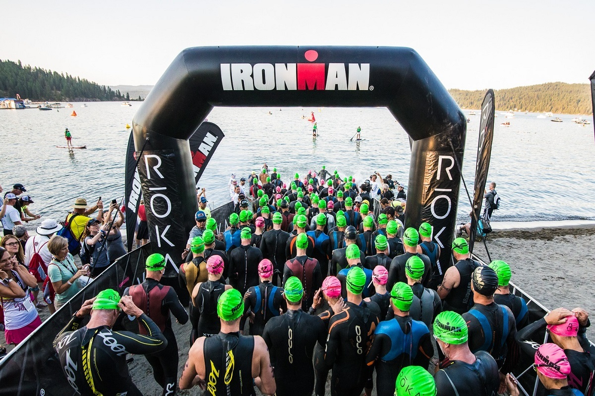
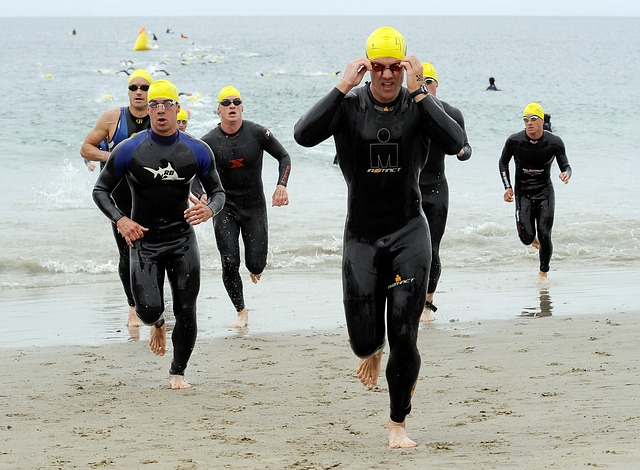

Ironman Swim

The Ironman swim is a 2.4 mile swim and depending on the venue/location it can be in a reservoir, canal, lake, or even the ocean. Athletes line up and take their place at the start and will form in a line, depnding on a personal pace you line up depinding on how fast you think you will finish. Fastest in the front and slowest in the back. Depending on the temp of the water, these swims can be either wetsuit legal or non-wetsuit-legal. They usually are wetsuit legal races. Wetsuits help with regulating body temp and help with bouyancy.
The swim start is usually the most chaotic part of the entire race, you have race day nerves kicking in and you are now contemplating all of your life decisions. Once the gun goes off athletes are filtered into the water to cause less chaos. But for the most part thats not how it goes. As athletes are swiming there is a lot of kicking and splashing. Most of time you cant see 1 foot infront of you and its common to be accidentally kicked or punched in the face. But as you get further in the swim more space forms between athletes.

Once athletes finish the 2.4 mile swim they will then head to T1 or transition 1. This is also known as "Swim to Bike"